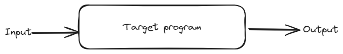

Compiler Design
Table of Contents
1. Language Processors
Programming Languages are human readable and can't be executed by a machine. Therefore, we need to process them in some form to execute a program written in a programming language. A language processor is of two broad categories
Compiler : A compiler converts the source program written in a programming language to a target program which is executable by the machine.
This target program is then executed by the user, who can provide input to this program.

Interpreter : An interpreter does not generate a target program. It will take the source code and the input from the user and executes it, seemingly without producing target machine's code. The interpreter actually may convert the source code to a byte code or even to machine code (usually via Just-In-Time compilers).
Programs using interpreters are usually slower in execution than compiled programs. But interpreters can usually have better runtime diagnostics than a compiled language.
- Hybrids : Some languages like Java have a hybrid approach. The java compiler first converts the Java source code into bytecode. This bytecode can't be run on an actual machine. Instead it is then given to a virtual machine, called Java Virtual Machine which will interpret the bytecode.
1.1. Programs required for executable
When using a compiler, it often doesn't directly convert source code to an executable form. There are various steps that are taken to convert a source program to an actual executable program. A compiler is one of the working components, but the other parts are
- Preprocessor : rather than having a single source file, we often divide program into seperate source files. The preprocessor will collect all of these source files before feeding them to compiler. Preprocessor also handles the macros.
- Compiler : the preprocessor then gives the modified source code to compiler. While some compilers can generate machine code directly, some compilers may not actually produce machine code. They will instead generate assembly code which is easier to generate
- Assembler : the assembler is another type of compiler, it is a special name for a compiler which can convert assembly code to machine code.
- Linker/Loader : the whole program is often not in a single executable. Programs depend on system libraries and modules. The linker resolves the external memory addresses to libraries and modules and loader is responsible for loading libraries in memory when program is running.

We will only look at the compiler portion of this whole language processing system
1.2. Structure of a compiler
A compiler will have two primary parts : analysis and synthesis
- Analysis : the analysis uses a predefined context-free grammer of the programming language to convert it to an Intermediate Representation (IR). If the analysis finds that code is syntactically or semantically wrong, then it will tell the programmer by error messages. Along with the IR, it also stores data in a symbol table. The symbol table along with IR is used by the synthesis part of compiler. The analysis portion is called the frontend of a compiler
- Synthesis : the synthesis portion of compiler will use the IR and symbol table to generate the target code. It produces optimized code by optimizing the IR. Optimization is a major part of the compiler, the optimization is of two types. The machine independent optimization will optimize the IR which it gets from the frontend of compiler. The machine dependent optimization will optimize the machine code which is obtained after code generator has converted IR to machine code. The synthesis part of compiler is called backend of the compiler
1.2.1. Lexical Analysis
The lexical analyzer called the lexer or scanner, takes the source code and converts in to a list of meaningful atoms called lexemes. A lexeme is the smallest unit of the source code which is meaningful to a compiler. Types of lexemes includes all the operators, keywords, identifiers, literals, and other symbols used by language (like parenthesis, braces, commas, dot, semicolon etc.)
A lexeme is stored in the form of a token as
\[ \langle \text{token-name}, \text{attribute-value} \rangle \]
The attribute-value is the entry for that token in the symbol table. This information is needed for code generation. Example, suppose the source code is
position = initial + rate * 60
This has seven lexemes
- position is a lexeme, which is an identifier. This is stored in the form of token \(\langle identifier, position\rangle\). It can be stored in memory as \(\langle id, 1 \rangle\) where 1 is it's location on the symbol table
- = is a lexeme. But we don't need to store a seperate attribute-value for this, since = symbol can be used to identify it uniquely unlike identifiers which can have any name. We can store it as \(\langle equal, = \rangle\), but often we only show this as \(\langle = \rangle\)
- initial is another identifier, which in form of token is \(\langle identifier, initial \rangle\) and is stored in symbol table using \(\langle id, 2 \rangle\)
- + is only single character lexeme. Similar to equals, we will store is as \(\langle + \rangle\)
- rate is an identifier, therefore we store it in symbol table as \(\langle id, 3\rangle\)
- * is a single character lexeme, so it is stored as \(\langle * \rangle\)
- 60 is a literal. Similar to how + and * can be used to identify them uniquely, we can also identify literals in code uniquely. So token can be shown as \(\langle literal, 60 \rangle\) and stored as \(\langle 60 \rangle\). For languages with strong type checkings, we may even store the supposed type of the literal. So, 60 maybe stored as \(\langle \text{int-literal}, 60 \rangle\)
The final symbol table for this piece of code will be
| attribute-value | scope | type | … |
|---|---|---|---|
| position | … | … | … |
| initial | … | … | … |
| rate | … | … | … |
And the lexemes are grouped into tokens as
\[ \langle id, 1\rangle \langle = \rangle \langle id, 2\rangle \langle + \rangle \langle id, 3\rangle \langle * \rangle \langle 60 \rangle \]
1.2.2. Syntax Analysis
The tokens we get from lexical analysis are then arranged in form of a tree, called the Abstract Syntax Tree (AST). These trees are formed by a process called parsing, which is done by parsers. These parsers use context-free grammers in order to make the AST.
- The inner nodes of tree are the operators
- The leaf nodes of tree are arguments for the operators
1.2.3. Semantic Analysis
The syntax tree is checked by a semantic analyzer to check if it follows all the rules defined by the language. This is the place where type checking is done and implicit conversions are done. If the syntax tree is not correct, then it will give programmer a messaage informing that went wrong.
1.2.4. Intermediate Code Generation
While we can simply generate target code at this point (which transpilers will do). When making a langauge, we often want it to work on multiple platforms. To achieve this, rather than convert to machine code or assembly code that works on a single machine, we generte a machine-like intermediate code. The requirements for good intermediate code is that it is easy to generate and easy to map to actual machine code. We usually use a three-address code, it is assembly language like instructions with every instruction having only 3 operands.
Example, for our code we can have the following instructions
t1 = 60 t2 = id3 * t1 t3 = id2 + t2 id1 = t3
1.2.5. Code optimizations
The machine independent code optimization is done on the Intermediate Code that we produced in the previous step. The optimization can be done to increase speed, reduce space, reduce number of instruction etc.
For our example, we can reduce the number of instruction by optimizing
t1 = id3 * 60 id1 = id2 + t1
1.2.6. Code generation
The optimized intermediate code from the previous step is converted to equivalent machine code. This machine code is usually assembly for the platform. The storage allocation such as stack and heap are also initialized here. The type of storage allocation needed will depend on the type language. Example, C needs both a stack and a heap, but Forth only needs a stack.
1.3. Classification of Languages
Classification by generation is done as
- First Generation of Languages refer to machine code
- Second Generation of Languages refer to assembly code
- Third Generation of Languages refer to higher level langauges such as C, C++, Java, Lisp and C#
- Fourth Generation of Languages are domain specific languages such as SQL for database queries, Postscript for documents and NOMAD for report generation
- Fifth Generation of Languages refers to logic-based and constraint-based languages like Prolog and OPS5
Another classification is between declarative and imperitive languages
- Imperitive languages use imperitive instructions for what the program needs to do. The program goes through program statement after statement executing them in-order. The programmer needs to give specific instructions to get the necessary results.
- Declarative languages don't have statements. Instead we use declarations that declare what needs to be done. Functionl programming languages such as haskell and logic langauges such as Prolog are declarative
Some other types of langauges classification are
- Von-neumann language are programming languages based on the von-neumann architechture, example C and Fortran
- Scripting languages are interpreted languages that are usually used to automate, customize and "glue" computations. Most operating systems come with a default scripting language, like bash on most linux systems, zsh on macOS and powershell on windows. These langauges help automate tedious tasks on these systems
2. Lexical Analysis
A token is a 2-tuple of a name and an attribute (The attribute is often optional)
\[ \langle name, attribute \rangle \]
- A pattern describes the different forms a token can take in code. Keywords are always the same sequence of characters, whereas identifiers can be any other sequence of characters (with extra rules like they can't start with a digit). The pattern is what is matched to identify token.
- A lexeme is a sequence of characters in the source code which matches a pattern. It is usually stored as the attribute of a token
2.1. Input Buffering
Suppse our lexer sees the symbol \(<\), rather than simply declare it as a \(\langle \text{less than}, < \rangle\) token. It needs to look forward to check whether it is \(<=\), in which case it would be a \(\langle \text{less than equal}, <= \rangle\) token.
Similarly, on seeing characters \(if\), it can't simply declare it as \(\langle keyword ,if \rangle\). Because it could be an identifier \(ifx\) in which case token was actually \(\langle identifier , ifx \rangle\)
Therefore, we need to buffer input to a lexer, so that it can look ahead at the input source code and make correct decisions
2.1.1. Two-Buffer arrangement
We use two buffers for look ahead. Each buffer is of same size \(N\) (usually we use 4096 bytes for a single buffer).
- Two pointers are used, a lexemeBegin pointer to the start of current lexeme and a forward pointer which moves forward till a pattern is matched and we get the complete lexeme
- When advancing forward we test whether we have reached the end of one of the buffer, in which case the other buffer is reloaded with next part of source code.
- So a maximum lexeme of size \(2N\) is allowed in this configuration, any larger size lexeme will overwrite a buffer and cause problems
- Usually at the end of both buffers we put a sentinal which tells us that we reached end of that buffer. In C it is usually the \0 symbol, in other languages we use the EOF for this purpose
2.2. Regular Expressions
We will use regular expressions to match lexemes. We use regular expression from automata theory, not those which are used in programming usually
So regular expression
\[ letter (letter \cup digit)* \]
can match every legal identifier in C. Here \(letter\) is standin for all letters a-z, A-Z and underscore. Similarly \(digit\) is standin for all digits 0-9
Rather than using a \(\cup\) we may also use \(|\) symbol. This will shorten the above regular expression to
\[ letter (letter | digit)* \]
2.2.1. Properties of regular expressions
Some properties that help when working with regular expressions are
| LAW | DESCRIPTION |
|---|---|
| \(r \mid s = s \mid r\) | \(\mid\) is commutative |
| \(r \mid (s \mid t) = (r \mid s) \mid t\) | \(\mid\) is associative |
| \(r(st) = (rs)t\) | concatnation is associative |
| \(r(s \mid t) = rs \mid rt\) | concatnation distributes over \(\mid\) |
| \((r \mid t)s = rs \mid ts\) | concatnation distributes over \(\mid\) |
| \(\epsilon r = r \epsilon = r\) | \(\epsilon\) is identify for concatnation |
| \(r* = (r \mid \epsilon)*\) | \(\epsilon\) is always in closure |
| \(r** = r*\) | closure is idempotent |
2.2.2. Regular definitions
Rather than writing large regular expressions, we will break a single regular expression into smaller definitions
The complete regular expression for previous example for matching all valid C identifiers will be
\[ A|B|...|Z|a|b|...|z|\_ (A|B|...|Z|a|b|...|z|_|0|1|...|9)* \]
But, we will break it into smaller regular definitions as
\[ letter \rightarrow (A|B|...|Z|a|b|...|z|\_) \] \[ digit \rightarrow (0|1|...|9) \] \[ id \rightarrow letter (letter | digit)* \]
Another example is regular definitions to match all floats, including the floats in E notation. This is done as follows
\[ digit \rightarrow (0|1|...|9) \] \[ digits \rightarrow digit\ digit* \] \[ optionalFraction \rightarrow .\ digits\ | \epsilon\] \[ optionalExponent \rightarrow (E(+|-| \epsilon )\ digits) | \epsilon \] \[ number \rightarrow digits\ optionalFraction\ optionalExponent \]
2.2.3. Extensions to regular expressions
There are three common extensions to regular expressions
- Operator \(+\) is used to match one or more instances, rather than the usual zero or more matched by \(*\). This is called the positive closure. \(r+\) is equivalent to \(rr*\) or \(r*r\)
- Operator \(?\) is used to mathc zero or one instance. So \(r?\) is equivalent to \(r|\epsilon\)
- Character classes are used to match from a group of characters. \([ a_1 a_2 a_3 ... a_i ]\) is equivalent to \(a_1|a_2|a_3|...|a_i\)
| NAME | OPERATOR | MATCHES |
|---|---|---|
| Kleene closure | * | Zero or more instances |
| Positive closure | + | One or more instances |
| ? | Zero or one instance | |
| Character classes | \([ a_1 a_2 ... a_i ]\) | \(a_1\mid a_2\mid ... \mid a_i\) |
3. Syntax Analysis (Parsing)
Parsers can be divided into three categories : universal, top-down and bottom-up. Universal parsers such as CYK can parse any context-free grammer. Whereas top-down and bottom-up grammer only parse a subset of all context-free grammers, usually LL and LR grammers. But we usually only use top-down and bottom-up parsers for compilers since universal parsers are very slow and LL/LR grammers are sufficient for syntax analysis.
3.1. Context-free grammers
A derivation in a CFG is shown by
\[ S \overset{*}\Rightarrow \alpha \]
Here, \(\alpha\) is an indermediate in the derivation and is called a sentinal
3.1.1. Rightmost derivations
When deriving sentinals, if we always select the rightmost terminal for next step in derivation, it is called rightmost derivations also called cannonical derivations
\[ S \overset{*}{\underset{rm} \Rightarrow} \alpha \]
Here, \(\alpha\) is the final derived string. We can show steps of rightmost derivations by writing rm under the arrow. An example is,
\[ S \underset{rm}\Rightarrow ABC \underset{rm}\Rightarrow ABcD \underset{rm}\Rightarrow ABcd \underset{rm}\Rightarrow Abcd \underset{rm}\Rightarrow abcd \]
3.1.2. Leftmost derivations
In leftmost derivation, we will always choose the leftmost non-terminal to replace during the derivation process.
\[ S \overset{*}{\underset{lm} \Rightarrow} \alpha \]
The same example we saw before is derived using leftmost derivatives as
\[ S \underset{lm}\Rightarrow ABC \underset{lm}\Rightarrow aBC \underset{lm}\Rightarrow abC \underset{lm}\Rightarrow abcD \underset{lm}\Rightarrow abcd \]
3.1.3. Ambiguity
A context-free grammer is said to be ambiguous if there exists two different parse trees for the same final derived string. This means that there is some other set of steps that could have been taken during derivation to reach the same string. Example, for the grammer
\[ E \rightarrow E + E | E * E | (E) | id \]
For the final sentence \(id + id * id\), there exist two distinct leftmost derivations
\[ E \underset{lm}\Rightarrow E + E \underset{lm}\Rightarrow id + E \underset{lm}\Rightarrow id + E * E \underset{lm}\Rightarrow id + id * E \underset{lm}\Rightarrow id + id * id \]
and
\[ E \underset{lm}\Rightarrow E * E \underset{lm}\Rightarrow E + E * E \underset{lm}\Rightarrow id + E * E \underset{lm}\Rightarrow id + id * E \underset{lm}\Rightarrow id + id * id \]
This gives two different parse trees
/2023-12-21_17-35-36_Untitled-2023-12-13-1318.png)
3.1.4. Eliminating Ambiguity
There is no guaranteed algorithm that can remove all ambiguity from a grammer. But if we find a ambiguity in our grammer, we can remove it by hand.
Let's take the previous example; we know that for the above we want the first parse tree only since * has a higher precedance than the + operator. The following modified grammer will remove ambiguity.
\[ E \rightarrow E + T | T \] \[ T \rightarrow T * F | F \] \[ F \rightarrow id | (E) \]
This will lead to a single parse tree for sentence \(id + id * id\)
3.1.5. Elimination of Left Recursion
A grammer is left recursive is
\[ A \overset{+}\Rightarrow A \alpha \]
- \(\alpha\) is some combination of variables and terminals.
- The + stands for one or more derivation steps (rather than *, which means zero or more derivation steps)
- We need to eliminate left recursion when using top-down parsing. Since top-down parsing does not support left recursion in the grammer
3.1.5.1. Eliminating direct left recursion
If there is a rule of type
\[ A \rightarrow A \alpha \]
in the grammer, we say that the grammer has direct left recursion. The procedure to remove direct left recursion is simple. For every nonterminal \(A\) with a direct left recursion rule do the following :
Group all productions of \(A\) to following form
\[ A \rightarrow A \alpha_{1} | A \alpha_{2} | ... | A \alpha_{m} | \beta_{1} | \beta_{2} | ... | \beta_{n} \]
Replace these \(A\) productions with
\[ A \rightarrow \beta_{1} A' | \beta_{2} A' | ... | \beta_{n} A'\] \[ A' \rightarrow \alpha_{1} A' | \alpha_{2} A' | ... | \alpha_{m} A' \]
3.1.5.2. Eliminating all left recursion
After eliminating all direct left recursion, there may still be indirect left recursion. The algorithm to eliminate all left recursions is as follows
- The nonterminals are \(A_1, A_2, ... , A_n\)
- for every i from 1 to n
- for every j from 1 to (i - 1)
- if there is a production of type \(A_i \rightarrow A_j \gamma\), replace it by \(A_i \rightarrow \delta_1 \gamma | \delta_2 \gamma | ... | \delta_k \gamma\), where the productions for \(A_j\) currently are \(A_j \rightarrow \delta_1 | \delta_2 | ... | \delta_k\)
- eliminate all immediate left recursion using process from previous section
- for every j from 1 to (i - 1)
3.2. FIRST and FOLLOW functions
These two functions are used in both top-down parsing and bottom-up parsing.
- for top-down parsing, they are usually to predict which production to choose next
- these functions can be used for panic-mode error recovery for synchronizing
3.2.1. FIRST function
\(FIRST(\alpha)\) is a function that will take input \(\alpha\) which is either a terminals or non-terminals and returns a set of terminals. The set of terminals is the first terminal in strings that can be derived from \(\alpha\) \[ FIRST(\alpha) = \{ x : \alpha \overset{*}\Rightarrow x \beta \} \] Here, \(\beta\) is a string of terminals or \(\epsilon\)
The algorithm to compute \(FIRST(X)\) is as follows
3.2.1.1. If \(X\) is a terminal
If \(X\) is a terminal, then \(FIRST(X) = \{X\}\)
3.2.1.2. If \(X\) is a non-terminal
IF \(X\) is a non-terminal then
- For all productions \(X \rightarrow Y_1 Y_2 ... Y_n\) add \(FIRST(Y_1)\) to the set of \(FIRST(X)\)
- If for some production \(X \rightarrow Y_1 Y_2 ... Y_n\), \(Y_1 \overset{*}\Rightarrow \epsilon\) then we also need to add \(FIRST(Y_2)\) to set of \(FIRST(X)\). Similarly, if \(Y_2 \overset{*}\Rightarrow \epsilon\) then we also add \(FIRST(Y_3)\) to \(FIRST(X)\) and so on.
- IF \(X \overset{*}\Rightarrow \epsilon\) then add \(\epsilon\) to \(FIRST(X)\)
3.2.1.3. For string \(X_1 X_2 ... X_n\) of terminals and non-terminals
We can also define \(FIRST(X_1 X_2 ... X_n)\) where each \(X_i\) can be a terminal or non-terminal.
- \(FIRST(X_1 X_2 ... X_n) = FIRST(X_1)\)
- If \(X_1 \overset{*}\Rightarrow \epsilon\), then we also need to add \(FIRST(X_2)\) to result. Similarly, if \(X_2 \overset{*}\Rightarrow \epsilon\) then we need to add \(FIRST(X_3)\) to result and so on.
3.2.2. FOLLOW function
The \(FOLLOW(A)\) excepts a non-terminal \(A\), and returns a set of terminals that appear immediately to the right of this terminal in sentinals (sentinals are intermediate forms during derivation).
The algorithm to compute \(FOLLOW(A)\) is as follows
- For start variable \(S\), \(FOLLOW(S) = \{💲\}\). The $ is called the input right endmarker
- For a production of type \(A \rightarrow \alpha B \beta\), then \(FOLLOW(B) = FIRST(\beta) - {\epsilon}\)
- If \(\epsilon \in FIRST(\beta)\) for the production \(A \rightarrow \alpha B \beta\), then \(FOLLOW(B) = FOLLOW(A)\)
- For a production of type \(A \rightarrow \alpha B\), then \(FOLLOW(B) = FOLLOW(A)\)
3.3. Top-Down Parsing
A common technique for top-down parsing is recursive descent parsing.
- The recursive descent parser can parse a grammer which does not have left recursion
- The recursive descent parser may need to backtrack to get the correct parse tree
- A predictive parser is a top-down parser which does not need to backtrack
- The class of grammers that can be parsed by a predictive parser by look \(k\) symbols ahead is called an \(LL(k)\) parser
3.3.1. Recursive descent parser
In recursive-descent parser, we have a procedure for each non-terminal in the grammer. This procedure will know all of the productions of the grammer.
- It will choose a production and check if the first symbol in the RHS of production is a terminal or non-terminal.
- If it is a non-terminal, it will call the procedure for that non-terminal
- If it is a terminal, it will try to match it with current input symbol.
- If input symbol matches current symbol, then we move the current symbol pointer forwards
- If input symbol does not match, we need to backtrack and select some other production
If we go through all the production via backtracking, we can conclude that the input does not belong to our grammer.
For some general context-free grammers this can cause a lot of backtracking making this parser very inefficient. But for programming languages, we usually make grammers that won't cause significant backtracking.
3.3.2. LL(1) Grammars
The LL(1) grammer is the grammer which can be parsed by a recursive descent (predictive) parser.
- The first L stands for scanning left to right
- The second L stands for leftmost derivation
- The (1) stands for the amount of lookahead to make parsing decision on each step
A grammer is LL(1) if for any production of type \(A \rightarrow \alpha | \beta\). i.e, for every pair of productions for a given non-terminal
- \(FIRST(\alpha)\) and \(FIRST(\beta)\) are disjoint, i.e, \(FIRST(\alpha) \cap FIRST(\beta) = \phi\)
- If \(\epsilon\) is in \(FIRST(\beta)\), then \(FIRST(\alpha)\) and \(FOLLOW(A)\) are disjoint, i.e, if \(\epsilon \in FIRST(\beta)\), then \(FIRST(\alpha) \cap FOLLOW(A) = \phi\)
3.3.3. Parsing Table
We can create a parsing table using the FIRST and FOLLOW functions. The algorithm for a parsing table \(M\) is as follows
- For every production \(A \rightarrow \alpha\)
- For each terminal \(a\) in \(FIRST(\alpha)\),
- If \(a \ne \epsilon\) add production \(A \rightarrow \alpha\) to \(M[A,a]\)
- If \(a = \epsilon\), for every terminal \(b\) in \(FOLLOW(A)\)
- add \(A \rightarrow \alpha\) to \(M[A,b]\)
- For each terminal \(a\) in \(FIRST(\alpha)\),
If a grammer is LL(1) this will put only a single rule in each cell of the parsing table. Using this parsing table, we can get first rule by \(M[S,a]\) where \(a\) is the first symbol in input. Then we can keep matching and moving forward
3.3.4. Nonrecursive Predictive Parsing
Using the parsing table, we can parse LL(1) grammer without recursion. For this we use a stack to parse the input tokens list. The algorithm works as follows
a = first symbol of token list
X = top element of stack (don't push out of stack)
while stack is not empty {
/* token was matched */
if ( X = a ) {
pop(stack)
a = next symbol of token list
}
/* could not match token */
else if (X is terminal) {
error()
}
/* parsing error */
else if (M[X,a] is empty) {
error()
}
/* output the next production to apply */
else if (M[X,a] is a production X -> Y1 Y2 Y3 ... Yk) {
print the production (X -> Y1 Y2 Y3 ... Yk)
pop(stack)
push Yk Y{k-1} ... Y1 to stack with Y1 on top
}
X = top element of stack (don't push out of stack)
}
3.4. Bottom-Up Parsing
A common method of bottom-up parsing is shift reduce parsing. The class of grammers for which we can build a shift-reduce parser are called LR grammers.
3.4.1. Reduction
In every reduction step, we will take leftmost current symbols (terminal or non-terminal) from input and replace with a non-terminal using one of the productions.
A reduction step is the reverse of a derivation step that must have been taken to derive the string we got as input.
If the derivation was a rightmost derivation, then the parsing be left-to-right for the input.
The shift reduce parsing will start at the input string and work it's way backwards to the start variable through reduction steps.
Example, \[ id * id \rightarrow F * id \rightarrow T * id \rightarrow T * F \rightarrow T \rightarrow S \]
3.4.2. Handle Pruning
The handle is a substring of symbols (terminals or non-terminals) in the sentinal form that matches the RHS of one of the production.
Here, we are adding subscripts to the tokens id for clarity when parsing input string \(id_1 * id_2\)
| RIGHT SENTINAL FORM | HANDLE | REDUCING PRODUCTION |
|---|---|---|
| \(id_1 * id_2\) | \(id_1\) | F -> id |
| \(F * id_2\) | F | T -> F |
| \(T * id_2\) | \(id_2\) | F -> id |
| T * F | T * F | T -> T * F |
| T | T | E -> T |
Formally, if \(S \overset{*}{\underset{rm}\Rightarrow} \alpha A w \underset{rm}\Rightarrow \alpha \beta w\). Then production \(A \rightarrow \beta\) in position following \(\alpha\) is called the handle.
- Here, \(w\) is only a string of terminals since we are doing a rightmost derivation.
- So for a given right-sentinal form \(\gamma\), we can match a \(\beta\) substring where we have a production in grammer \(A \rightarrow \beta\)
- So to reconstruct previous right-sentinal form \(\gamma_n\) of a derivation, we need to find the handle \(\beta_n\) for a relevant production \(A \rightarrow \beta_n\)
3.4.3. Shift-reduce parsing
For shift-reduce parsing, we a stack and a input buffer. The input buffer holds the input string and stack holds the grammar symbols.
Initially, the input buffer contains the whole input in form of tokens. The shift operation will move a single token from input buffer to the top of stack.
The handle will always appear at the top of the stack. Till we are able to find a handle, we will do the shift operation. After a handle is matched, we will do the reduce operation
For our example \(id_1 * id_2\), the shift reduce parser does following steps
| STACK | INPUT | ACTION |
|---|---|---|
| \(id_1 * id_2\) | shift | |
| \(id_1\) | \(id_1 * id_2\) | reduce by F -> id |
| F | \(* id_2\) | reduce by T -> F |
| T | \(* id_2\) | shift |
| T * | \(id_2\) | shift |
| \(T * id_2\) | reduce by F -> id | |
| \(T * F\) | reduce by T -> T * F | |
| T | reduce by E -> T | |
| E | accept |
Therefore, we can have four operations a shift-reduce parser can do
- Shift : shift input symbol to top of stack
- Reduce : reduce the top of the stack using one of the productions
- Accept : announce successful parsing
- Error : a syntax error occurred
3.4.4. Conflicts during shift-reduce parsing
There can be two types of coflicts that happen in a shift-reduce parser.
- The shift/reduce conflict, where we cannot decide if we need to shift or to reduce
- The reduce/reduce conflicts, where we cannot decide if there are multiple candidate productions and we can't decide which one to use for reduce operation
Grammers in which these conflicts can occur are non-LR grammers.
3.4.4.1. shift/reduce conflict
All ambiguous grammers are non-LR grammers. Suppose we have a langauge with dangling-else to chain if-else as shown in following grammar
stmt -> if expr then stmt
stmt -> if expr then stmt else stmt
stmt -> other
Highlighted words are the terminals here.
Suppose our shift-reduce parser is in configuration
| STACK | INPUT |
|---|---|
| if expr then stmt | else …. |
- Here, depending on what is after else in the input we may need to do a reduce operation
- But since there is a production that matches current stack content. It could be the handle
Since both shift and reduce are valid next operations, this is a shift/reduce conflict
Note : we have ways to parse certain ambiguous grammers, such as this if-then-else grammer. We choose shifting over reducing in this grammer to parse it correctly. We do this since if-then-else are common in languages.
3.4.4.2. reduce/reduce conflict
Suppose our stack content is \(\alpha\) and we have two productions \(A \rightarrow \alpha\) and \(B \rightarrow \alpha\). We don't know which of the production is the correct handle. This is a reduce/reduce conflict
The reduce/reduce conflict is resolved by increasing the lookahead of the parsar
3.5. LR(0) parser
A simple LR(k) parser uses k lookahead symbols.
- L stands for left-to-right scanning
- R stands for rightmost derivation in reverse tree
- k is the number of lookahead
For most practical languages we use \(k \le 1\). We generally study LR(1) parsers only.
Why LR parser over LL parsers
- LR parsing methods detect syntactic error as soon as possible in a left-to-right scan
- LR grammar are a proper superset of LL grammar
3.5.1. Items and LR(0) automata
An LR parser makes shift/reduce decisions by maintaining states to keep track of where we are in the parsing process.
- We keep track of states using an automata called LR automata
- The states are the set of items. Items are productions with a dot at some position in the body.
Example, the production A -> XYZ has four items
- A -> .XYZ
- A -> X.YZ
- A -> XY.Z
- A -> XYZ.
The production A -> \(\epsilon\) has a single item
- A -> .
The item A -> X.YZ means that we have read X and hope to see YZ next in input
The item A -> XYZ. means that XYZ is read and maybe it's time to reduce
3.5.1.1. LR(0) collection
The collection of LR(0) items, called canonical LR(0) collection are basis for constructing a DFA that are used to make parsing decisions.
To construct LR(0) collection for a grammar, we first convert given grammar to an augmented grammar. Then we use two funtions CLOSURE and GOTO.
Augmented grammar
If we have a grammar \(G\), with the start symbol \(S\). We define augmented grammar \(G'\) with a new start symbol \(S'\)
We will add a single new production in \(G'\) which is \(S' \rightarrow S\). This is useful to indicate to parser when it should stop
Acceptance in parser occurs when and only when the parser is about to reduce \(S' \rightarrow S\)
CLOSURE of Item Sets
Suppose we have a set of item I, then the CLOSURE(I) is given as folows
- add every item in I to CLOSURE(I)
- If \(A \rightarrow \alpha . B \beta\) is in CLOSURE(I) and \(B \rightarrow \gamma\) is a production, add \(B \rightarrow . \gamma\) to CLOSURE(I). Apply this rule till no new items are added to CLOSURE(I). Here, adding \(B \rightarrow . \gamma\) means we add all B-productions (with . at start) to CLOSURE(I)
Suppose we have the grammar
- E -> E + T | T
- T -> T * F | F
- F -> ( E ) | id
Then, it's augmented grammar is
- E' -> E
- E -> E + T | T
- T -> T * F | F
- F -> ( E ) | id
If I is a items set \(I = \{ E' \rightarrow . E \}\). Then CLOSURE(I) is calculated as follows
- Initially \(CLOSURE(I) = \{ E' \rightarrow . E \}\)
- Since we have \(E\) after . in production \(E' \rightarrow . E\), we add productions \(\{E \rightarrow . E + T ,\ E \rightarrow . T \}\)
- Since we have \(T\) after . in production \(E \rightarrow . T\), we add productions \(\{ T \rightarrow . T * F,\ T \rightarrow . F \}\)
- Now we have \(F\) after . in production \(T \rightarrow . F\), we need to add productions \(\{ F \rightarrow . (E) ,\ F \rightarrow . id\}\)
Therefore, CLOSURE(I) contains following productions
- E' -> . E
- E -> . E + T
- E -> . T
- T -> . T * F
- T -> . F
- F -> . ( E )
- F -> . id
GOTO function
The second useful functin is GOTO(I,X), where I is a set of items and X is a grammar symbol. This function will give us transitions for the LR(0) automata
The method to compute GOTO(I,X) is as follows
- For every item \(q\) in set I
- If X is to the immediate right of the dot
- Move . one position to right and add closure of this new item to GOTO(I,X)
- If X is to the immediate right of the dot
So GOTO(I,X) is { CLOSURE(\(A \rightarrow \alpha X . \beta\)) } for all items in I such that \(A \rightarrow \alpha . X \beta\) is in set I
Example, GOTO({ E -> E + .T , T-> .T * F , T -> .F }, T)
- Here, two productions in set have T after the dot (.), they are \(E \rightarrow E + \cdot T\) and \(T \rightarrow \cdot T * F\)
- Therefore, the GOTO is equal to CLOSURE({ \(E \rightarrow E + T \cdot\) , \(T \rightarrow T \cdot * F\)})
So, GOTO({ E -> E + .T , T-> .T * F , T -> .F }, T) = CLOSURE({ \(E \rightarrow E + T \cdot\) , \(T \rightarrow T \cdot * F\)})
3.5.1.2. LR(0) automata
Also called the goto graph, this is the DFA which is used by the parser to make parsing decisions.
The automata is created as follows
- The start state \(I_0\) of this automata is a set of items CLOSURE({\(S' \rightarrow \cdot S\)}), where \(S' \rightarrow S\) is first production for our augmented grammar
- For each state \(I\)
- For each grammar symbol \(X\)
If GOTO(I, X) is not empty and not already in automata, add new state GOTO(I,X) in automata. The transition is marked by X and it is a between states I and new state GOTO(I,X).
The transition is \(I \overset{X}\rightarrow GOTO(I,X)\)
- For each grammar symbol \(X\)
- Repeat step 2 till there are no new states added to automata
For our grammar
- E' -> E
- E -> E + T | T
- T -> T * F | F
- F -> ( E ) | id
The automata is
/2023-12-30_03-18-04_Screenshot 2023-12-30 031755.png)
NOTE : The accept is always from the state with item \(S' \rightarrow S \cdot\), where \(S' \rightarrow S\) is the first production of our augmented grammar. Also the $ shows that there is no more input ahead
3.5.2. LR(0) table and LR-parsing algorithm
We first need an LR-parsing table to use the parser. An LR-parsing table has two parts
- ACTION, which takes a state \(i\) and a terminal \(a\), and gives one of the four actions
- SHIFT j : this will shift terminal \(a\) to the symbols stack and change state from i to j
- REDUCED A \(\rightarrow beta\) : reduce \(\beta\) from top of symbols stack to A
- ACCEPT : accept input and finish parsing
- ERROR : error in the input, does not belong to grammar
- GOTO, is the same function that we used for making the LR(0) automata. But for the table, rather than storing GOTO(I,X) for all grammar symbol X, we only store X that are non-terminals of our non-augmented grammar
3.5.2.1. GOTO table
So, the GOTO for parsing table for our grammar
- E -> E + T | T
- T -> T * F | F
- F -> ( E ) | id
This table is filled using the LR(0) automata that we built earlier. for every state, we check if it has transitions using a non-terminal to another state, otherwise we leave it empty
3.5.2.2. ACTION table
The parsing action ACTION(i,a) are determined as follows
- If \(A \rightarrow \alpha \cdot a \beta\) is in \(I_i\) and GOTO(\(I_i\),a) = \(I_j\) then ACTION(i,a) = SHIFT j
- NOTE : this can be filled directly by looking at LR(0) automata by seeing the transition from states over terminals
- The transitions over non-terminals are GOTO and transitions over terminals are SHIFT
- If \(A \rightarrow \alpha \cdot\) is in \(I_i\), then complete row \(i\) is REDUCE \(A \rightarrow \alpha\)
- If \(S' \rightarrow S \cdot\) is in \(I_i\), then ACTION(i,$) = ACCEPT
- If none of the three conditions above are satisfied, it is an error
If there are multiple possible actions for a single (i,a) pair using the above rules, the grammar is not LR(0)
Using the above rules, we can fill the whole ACTION(i,a) table for all terminals a and states i
The ACTION table for our grammar is
- \(s_i\) means operation SHIFT i
- \(r_i\) means operation REDUCE \(i^{th}\) production of current state
3.5.2.3. LR-parsing algorithm
For the LR-parsing algorithm, we use two stacks, one for storing the states and another for symbols
We show the current state of the LR-parser as \[ (s_0 s_1 ... s_m \ ,\ \ a_i a_(i+1) ... a_n ) \] Here, \(a_i a_(i+1) ... a_n\) is the remaining input (not shifted to symbols stack yet)
The state \((s_0 s_1 ... s_m \ ,\ \ a_i a_(i+1) ... a_n )\) corrosponds to right-sentinal form \(X_1 X_2 ... X_m a_i a_(i+1) ... a_n\)
The algorithm for LR-parsing given a parsing table is
If the current state is \((s_0 s_1 ... s_m \ ,\ \ a_i a_(i+1) ... a_n )\)
- If ACTION(\(s_m\), \(a_i\)) = SHIFT \(s_x\), then shift another symbol from input to the symbols stack and change the state of parser to \((s_0 s_1 ... s_m s_x \ ,\ \ a_(i+1) ... a_n )\)
- If ACTION(\(s_m\), \(a_i\)) = reduce \(A \rightarrow \beta\), then apply reduce on symbols stack and change configuration to \((s_0 s_1 ... s_{m-r} s_x \ ,\ \ a_i a_(i+1) ... a_n )\), here, \(GOTO(s_{m-r},A) = s_x\)
NOTE : The initial state of the parser is \((s_0 \ ,\ \ a_0 a_1 ... a_n )\). That is, whole input is not currently shifted and we start on initial state \(s_0\)
All LR-parsing algorithm use this same process, the only difference is in the parsing table
3.5.3. Viable Prefixes
The LR(0) automata can be used to make a LR(0) table since the automata has property of recognizing viable prefixes.
The stack content is always a collection some prefix of one of the possible handle. These prefixes that can appear on the stack are called viable prefixes.
Example, for the grammar
- E -> E + T | T
- T -> T * F | F
- F -> ( E ) | id
( E ) is a handle, therefore { (, ( E } are viable prefixes. Since they call can appear on the symbols stack.
- It is not necessary that valid prefix always appear at the symbols stack. After shifting { ( E } , parser may shift { T * } to the stack. Which means there are two valid prefixes in our stack now { ( E T * }
- The symbols stack always only contains of valid prefixes
- Parser can never shift over a complete handle. So parser will never shift new symbol over a ( E ) Therefore, ( E ) is a non-viable prefix.
An item \(A \rightarrow \beta_1 \cdot \beta_2\) is said to be valid item for a viable prefix \(\alpha \beta_1\), if there is a derivation \(S' \overset{*}{\underset{rm}\Rightarrow} \alpha A w \underset{rm}\Rightarrow \alpha \beta_1 \beta_2 w\)
3.5.3.1. Central theorem of LR-parsing
For an arbitrary viable prefix \(\gamma\), the set of valid items is the state in LR(0) automata which we reach then following path labeled by \(\gamma\) starting from the initial state. So if \(\gamma = ABC\), we take transition A, then B and lastly C, and state we end on is the set of valid items
3.6. SLR Parser
In both, reduce-reduce and shift-reduce conflicts; the main cause of the conflict is the shift operation. The SLR parser is more powerful than LR(0). It uses the FOLLOW operation to avoid some of these conflicts.
The only difference between LR(0) and SLR is where the reduce actions are placed in the table.
Suppose we have the grammar
- E -> E + T | T
- T -> T * F | F
- F -> ( E ) | id
For our grammar, the automata is
3.6.0.1. GOTO table
So, the GOTO for parsing table for our grammar is filled using the LR(0) automata. Procedure is same as it is for LR(0) parser.
3.6.0.2. ACTION table
The whole ACTION table is filled in same way as LR(0) parser except the reduce operation The parsing action ACTION(i,a) are determined as follows
- If \(A \rightarrow \alpha \cdot a \beta\) is in \(I_i\) and GOTO(\(I_i\),a) = \(I_j\) then ACTION(i,a) = SHIFT j
- NOTE : this can be filled directly by looking at LR(0) automata by seeing the transition from states over terminals
- The transitions over non-terminals are GOTO and transitions over terminals are SHIFT
- If \(A \rightarrow \alpha \cdot\) is in \(I_i\), then
- for every token 'a' in FOLLOW(A) we add ACTION(i,a) = REDUCE \(A \rightarrow \alpha\)
- If \(S' \rightarrow S \cdot\) is in \(I_i\), then ACTION(i,$) = ACCEPT
- If none of the three conditions above are satisfied, it is an error
If there are multiple possible actions for a single (i,a) pair using the above rules, the grammar is not LR(0)
Using the above rules, we can fill the whole ACTION(i,a) table for all terminals a and states i
The ACTION table for our grammar is
/2023-12-30_23-11-57_Screenshot 2023-12-30 231151.png)
- \(s_i\) means operation SHIFT i
- \(r_i\) means operation REDUCE \(i^{th}\) production of current state
3.6.0.3. The Parsing Algorithm
Once we have the table, the parsing algorithm is same for all the LR parsers. LR(0), SLR, CLR and LALR all use the same algorithm; only difference is the table which they produce.
3.7. More Powerful LR Parsers
There are two different LR parsing techniques that are more powerful that LR(0)
- canonical-LR or just "LR" method makes full use of the lookahead symbols. This method uses a very large set of items called LR(1) items
- lookahead-LR or LALR, which is based on LR(0) items has fewer states. But we introduce lookaheads into LR(0) items to handle more grammars
3.7.1. Canonical LR(1) items
In a LR(1) item, along with the production with a dot, we also store a terminal symbol. So LR(1) items have two components, example \([ A \rightarrow \alpha \cdot \beta \ ,\ a ]\). The \(a\) is the lookahead of the item.
- For an item of type \([ A \rightarrow \alpha \cdot \beta \ ,\ a ]\) and \(\beta \ne \epsilon\) i.e, where dot is not at the rightmost position, the lookahead is not used
- For item \([ A \rightarrow \alpha \cdot \ ,\ a ]\), this item represents a reduction by the production \(A \rightarrow \alpha\) if and only if the next input symbol is \(a\)
So unlike LR(0) items, for LR(1) item we only reduce if the next input symbol matches the lookahead
3.7.1.1. Viable prefix
LR(1) item \([X \rightarrow \alpha \cdot \beta \ ,\ x]\) is valid for a viable prefix \(\delta \alpha\), if
- there is a derivation \(S \overset{*}{\underset{rm}\Rightarrow} \delta X w \underset{rm}\Rightarrow \delta \alpha \beta w\)
- \(w\) starts with symbol \(x\); or if \(w\) is \(\epsilon\) and \(x\) is rightend marker $
Example, for the grammar
S -> BB
B -> aB | b
- If LR(1) item is \([ B \rightarrow a \cdot B \ ,\ a ]\) to show that \(aaa\) is a viable prefix, first we get that \(X = B\), \(\alpha = a\), \(\beta = B\), \(x = a\) so the derivation needs to be \[ S \overset{*}{\underset{rm}\Rightarrow} \delta B w \underset{rm}\Rightarrow \delta a B w \] there exists a suitable derivation with \(\delta = aa\) and \(w = ab\), \[ S \overset{*}{\underset{rm}\Rightarrow} aaBab \underset{rm}\Rightarrow aaaBab \] Therefore, \(\delta \alpha = aaa\) is a viable prefix
- If item is [ B \(\rightarrow\) a \(\cdot\) B , $ ] and we need to show that Baa is viable prefix, we first find that A = B, \(\alpha = a\), \(\beta = B\) and x = $. Since x = $, we also know that \(w = \epsilon\). hence, derivation must be \[ S \overset{*}{\underset{rm}\Rightarrow} \delta B \underset{rm}\Rightarrow \delta a B \] And for \(\delta = Ba\), we have derivation \[ S \overset{*}{\underset{rm}\Rightarrow} B a B \underset{rm}\Rightarrow B a a B \] Therefore, \(\delta \alpha = Baa\) is a viable prefix
3.7.1.2. Constructing LR(1) sets of items
TODO
3.7.2. LALR parsing tables
TODO